Getting Started¶
Once you’ve installed Ovation, you’re ready to start organizing your data. Ovation organizes data using entities (“nouns”) that are familiar to scientists: Projects, Experiments, Protocols, Measurements, etc. Each instance of these (and other) entities stored in the are called “objects”.
This tutorial will demonstrate adding numeric, image and tabular Measurements to a new Project.
Authentication¶
Before you can add data to your Ovation database, you must login using your email address and ovation.io password.
Note
If you’ve forgotten your ovation.io password, you can reset it.
Adding a new Project¶
This section shows you how to add a new Project object to the database. Projects are top-level entities in the Ovation data model, and are used to organize Experiment data. Projects may contain many Experiments, and Experiments can belong to many Projects.

To add a new Project, right click on the Ovation browser window and select ‘Insert Project..’.
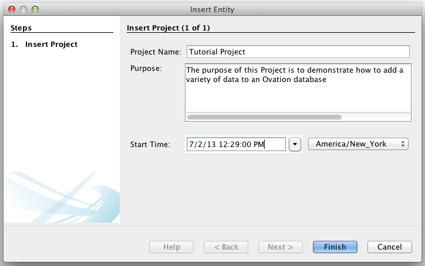{kind=link}
Follow the wizard to set the name, start time, and purpose for your Project. The purpose may be as general or specific as you want, although it generally should correspond to the hypothesis being tested in this Project.

Now that we have inserted a Project, it’s time to start adding Sources to the Project.
Adding a new Source¶
In life sciences, Sources can be thought of as the biological subject of an experiment. They are explicitly associated with the Epochs (or trials) they are involved in, and there can be many Sources associated with an Epoch. The Source object in the Ovation data model serves as the place to store any information that pertains to that Source, regardless of the conditions of an experiment it was involved in.
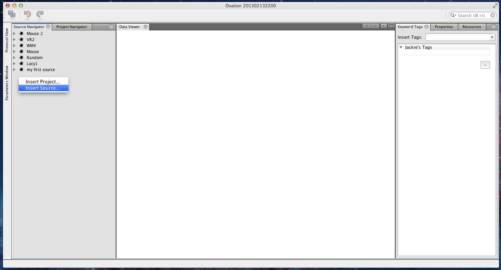{kind=link}
Let’s insert a Source object, by switching our view to the Source Navigator, and right clicking in the browser window.
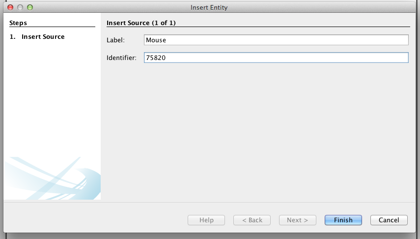{kind=link}
Here, I’ve given the Source a name of ‘Mouse’, and an id corresponding to the id in my animal database.
Since I’ve created two sources with the same label (Mouse), I should add some properties to them to distinguish them. I will do this by selecting my newly created Source, and switching to the properties view on the right side of my screen.
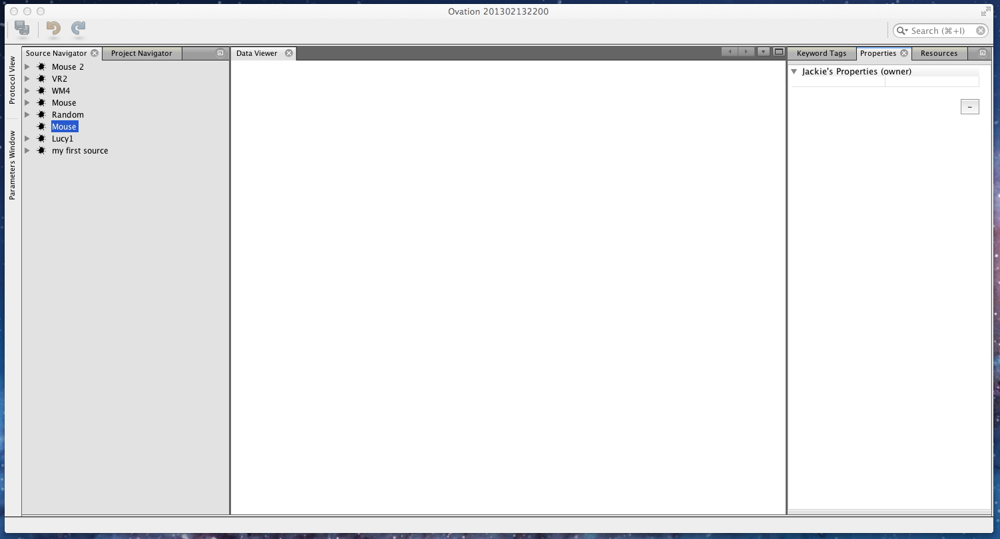{kind=link}
Here, I’ll add a few things that I know about this source.
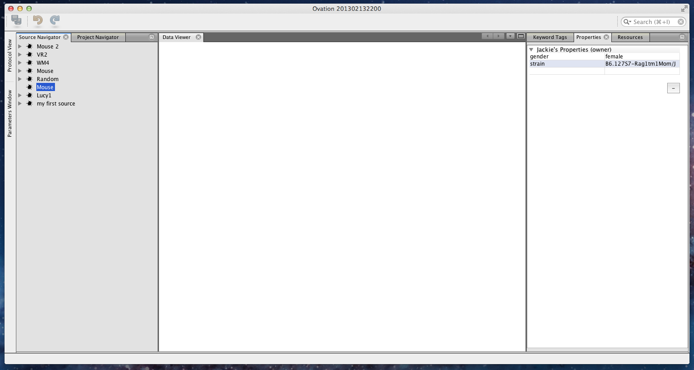{kind=link}
Now that we’ve created the Source object that we’ll use for the Experiment data we will add, we should add the Experiment.
Adding an Experiment‘s worth of data¶
Experiments are entities in the Ovation data model that contain a number of trials (called Epochs), organized into a hierarchy of trial groups (called EpochGroups). Conceptually, you should use EpochGroups to group Epochs in a way thats meaningful to your experimental protocol. Raw data is then added to Epochs in the form of Measurements.
Adding an Experiment¶
Experiments also contain the general setup and protocol information for all of the Epochs (or trials) contained in the Experiment. Information about the equipment used, including make, model, software version, as well as global settings of that equipment all belong in the EquipmentSetup entity attached to the Experiment. Information about the protocol for the Experiment belongs in the Protocol entity attached to this Experiment. Both the protocol and equipment setup information can be added after the fact, so we will not add it now.
To add a new Experiment, right click on a Project entity, and select ‘Insert Experiment...’

Now, lets add a couple EpochGroups to this experiment. Below, I’ll add two EpochGroups, one labeled ‘Control’, and the other labeled ‘Test’. To add an EpochGroup, right click the Experiment you just created, and select ‘Insert EpochGroup...’.
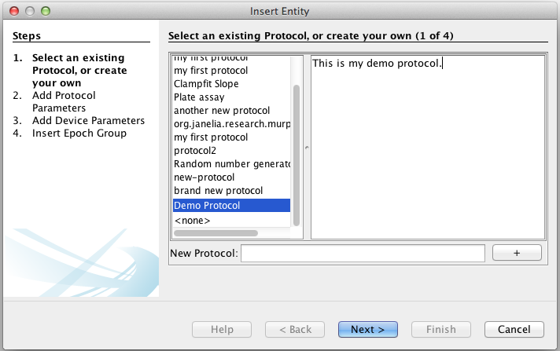
|
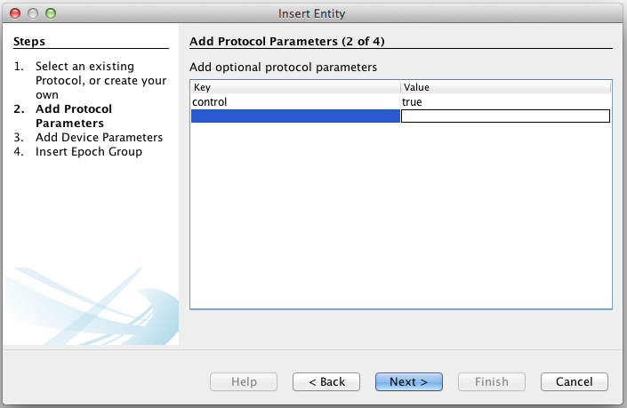
|
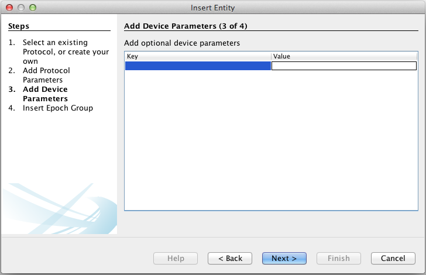
|
The first three panels of the wizard are related to an EpochGroup protocol. You may select an existing protocol at this stage, create a new one, or choose not to select one. I will choose to create a protocol named ‘Demo Protocol’ by typing ‘Demo Protocol’ in the text box below, and clicking on the plus button. Then I will edit the corresponding text box, to add my protocol document text. On the next panel, I will choose to add the protocol parameters {control, true}, because this is the protocol for my ‘control’ EpochGroup. I have no device parameters at this time, so I’ll leave that table blank.
The last panel contains the information for the EpochGroup object. I will set the label to ‘Control’ to indicate that all the Epochs found in this EpochGroup are control trials.
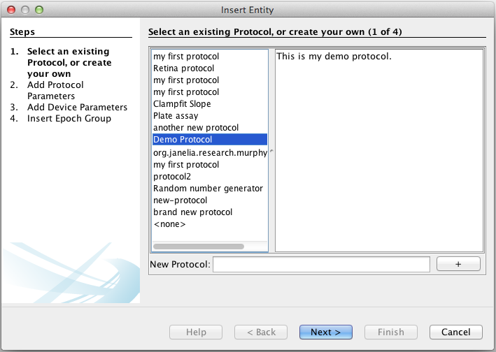
|
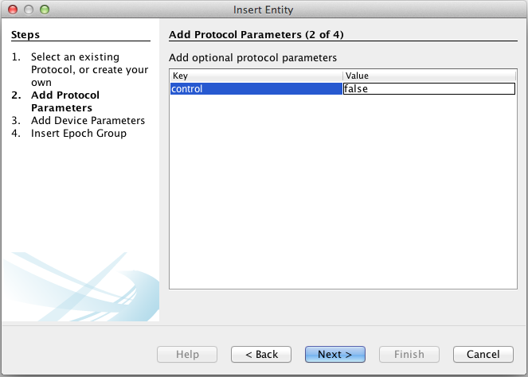
|
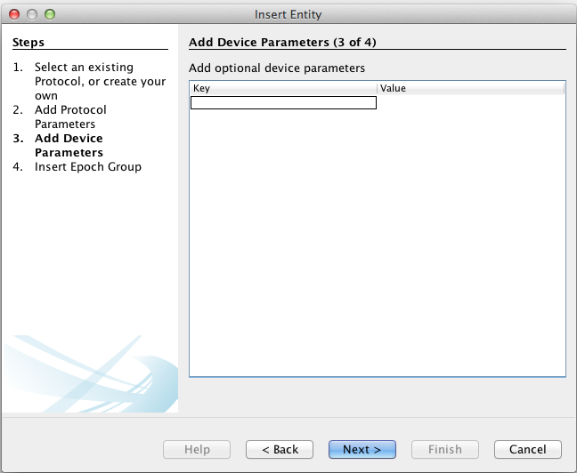
|
I will then create another EpochGroup with label ‘Test’. Again, the labeling of ‘Control’ and ‘Test’ are arbitrary, I chose them because it fit my experiment structure.

We are now ready to add the data to our Experiment!
Adding Data¶
Adding data is a two part process. First, we create an Epoch object. Each Epoch represents an event that happened during a specific time, involving a set of Sources. The next step is to add one or many Measurements to the newly created Epoch. To begin, right click on the ‘Control’ EpochGroup and select ‘Insert Measurement...’. This wizard will create an Epoch object with one Measurement object. You may optionally add more measurements to the Epoch object after it has been created.
Step 1 contains the start and end time for the Epoch.
Step 2 allows you to select the sources that are present during this Epoch. For this example, I will add the Source I created earlier, by selecting it on the left, and clicking the + button.
Sources are named within the scope of the Epoch. If you don’t set a name, the default is created of the form ‘label | id’. However, I’d like to rename the Source ‘first mouse’.
Steps 3-5 correspond to the protocol for this Epoch. I’ve chosen to skip that information, because my EpochGroup protocol document contains all the information I need.
Step 6 is where I choose the data file to add. I chose to add an image here, but I could have chosen a csv file, or any other single file of data. For image formats that contain important metadata or span multiple files, choose ‘Insert Image...’ instead of ‘Insert Measurement...’.
The next two steps allow you to select which among the sources and devices associated with the Epoch should be associated with this particular measurement. By default, all sources and devices are associated with all measurements; however, if a measurement is associated with just one source, or just one device, you may uncheck the irrelevant sources and devices here. Since I have not added any devices to this Experiment’s EquipmentSetup, my device list below is empty.
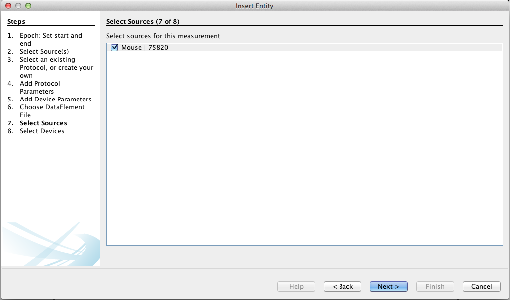
|
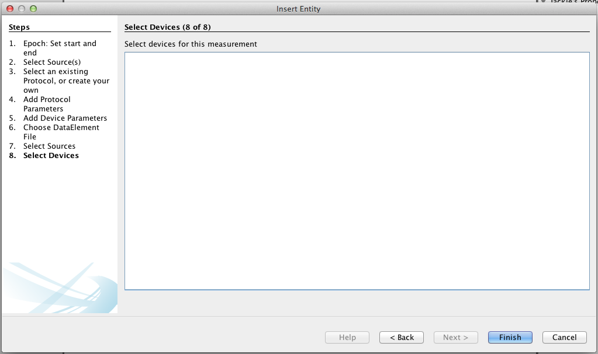
|
Great, we have now inserted our first Measurement! Follow either the ‘Insert Measurement...’, ‘Insert Numeric Measurement...’, or ‘Insert Image...’ wizards to insert more data.